MSBD6000C Project 3 Face Detection
Part 1: Positive Feature Extraction
Extract positive feature from 36x36 face only images. We use vl_hog from vlfeat library to extract the HoG descriptors.
for i = 1:num_images
img = imread(strcat(train_path_pos, '/', image_files(i).name));
img = single(img)/255;
if (size(img, 3) > 1)
img = rgb2gray(img);
end
feat = vl_hog(img, feature_params.hog_cell_size);
reshaped_feat = reshape(feat, 1, []);
features_pos(2*i-1,:) = reshaped_feat;
% mirroring the faces along the y axis
feat_flip = vl_hog(flipdim(img, 2), feature_params.hog_cell_size);
reshaped_feat_flip = reshape(feat_flip, 1, []);
Part 2: Negative Feature Extraction
Extract negative feature from 36x36 face only images. We use vl_hog from vlfeat library to extract the HoG descriptors. We first estimate the number of sample per non-face image. Then, we randomly sample each image with different scale([1 0.8 .06 .04]). Finally, we will randomly pick up the required number of sample since each image is sampled multiple time according to scale
% Find number of samples per image
num_samples_per_image = ceil(num_samples / num_images);
% Size of each sample patch
patch_size = feature_params.template_size;
initial_num_samples = num_samples;
%[1 0.8 0.6 0.4]
scales = 1:-0.2:0.4;
count = 0 ;
for i = 1:num_images
img = imread(strcat(non_face_scn_path, '/', image_files(i).name));
if (size(img, 3) > 1)
img = rgb2gray(img);
end
for scale_index = 1:length(scales)
scale = scales(scale_index);
scaled_img = imresize(img, scale);
img_size = size(scaled_img);
if img_size(1) < feature_params.template_size || img_size(2) < feature_params.template_size
break
end
[y, x] = size(scaled_img);
for j = 1 : ceil(num_samples_per_image * scale)
small_img = img(randi(y - patch_size + 1) + (0 : patch_size - 1), randi(x - patch_size + 1) + (0 : patch_size - 1));
feat = vl_hog(single(small_img), feature_params.hog_cell_size);
reshaped_feat = reshape(feat, 1, []);
count = count + 1;
if count>=num_samples
% resize features_neg
num_samples = num_samples + initial_num_samples;
temp = features_neg;
features_neg = zeros(num_samples, dims);
features_neg(1:size(temp, 1), :) = temp;
end
features_neg(count, :) = reshaped_feat;
end
end
end
indices = randperm(count);
features_neg = features_neg(indices,:);
features_neg = features_neg(1:initial_num_samples, :);
|
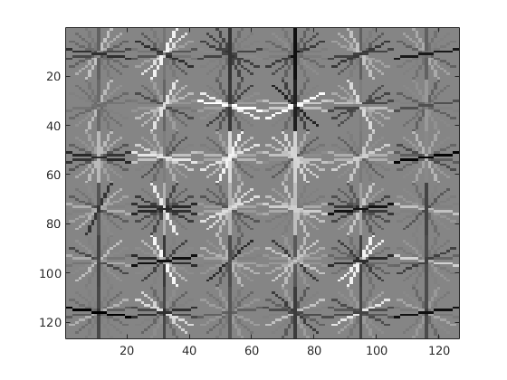
|
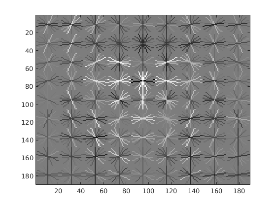
|
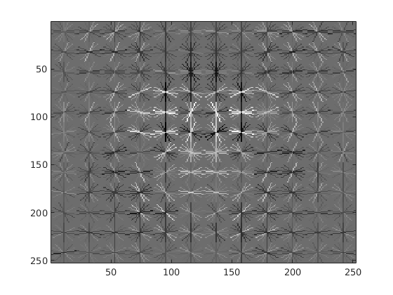
|
Part 3: Training SVM
We train the svm classifier using the feature extracted in previous parts
lambda = 0.0001;
%Training Data:
X = [features_pos; features_neg];
%Training Label:
Y = [ones(size(features_pos, 1), 1); -1 * ones(size(features_neg, 1), 1)];
%Collect Data to SVM:
[w b] = vl_svmtrain(X', Y', lambda);
Step 4: Run Detector on Test Set
We run a detector on all the test images. Firstly, we compute the HoG features of the image. Then we iterate through each group of cell (sliding window) and compute the confidence level. If it is higher than the threshold, we consider it as a face. We then scale the image in a loop to detect faces of different sizes. After some experimentation I find the threshold of 0.75 works good in our use case. In the end we supress the overlapping superfluous image detections.
Below is a code snippet that shows the core of how we run detector for a given image.
while scale >= 0.1
hog = vl_hog(imresize(img, scale), feature_params.hog_cell_size);
for j = 1: size(hog, 1) - window_size
for k = 1: size(hog, 2) - window_size
curr_features = hog(j: j + window_size - 1, k: k + window_size - 1, :);
confidence = reshape(curr_features, [1, window_size ^ 2 * 31]) * w + b;
if confidence > 0.75
x_min = k * feature_params.hog_cell_size;
y_min = j * feature_params.hog_cell_size;
curr_bboxes = [curr_bboxes; [x_min, y_min, x_min + feature_params.template_size, y_min + feature_params.template_size]./scale];
curr_confidences = [curr_confidences; confidence];
curr_image_ids = [curr_image_ids; test_scenes(i).name];
end
end
end
scale = scale - 0.01;
end
|
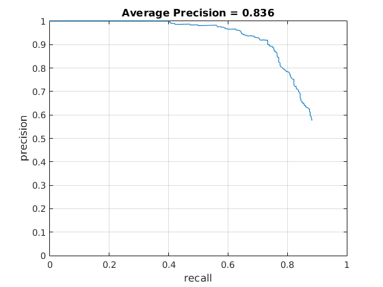
|
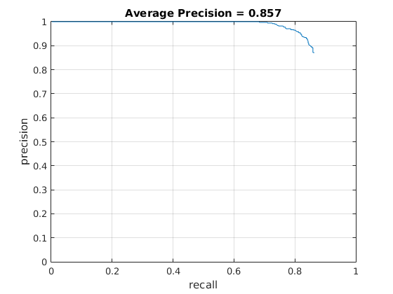
|
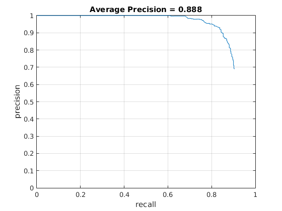
|
EXTRA CREDITS
Augmentation of traning data
We do mirror of image by flipping and rotate the image a little bit. The result increased a little bit.
num_images = int16(length(image_files));
fprintf('\nget_positive_features use %d images\n',num_images)
features_pos = zeros(num_images*3, (feature_params.template_size / feature_params.hog_cell_size)^2 * 31);
for i = 1:num_images
img = imread(strcat(train_path_pos, '/', image_files(i).name));
img = single(img)/255;
if (size(img, 3) > 1)
img = rgb2gray(img);
end
feat = vl_hog(img, feature_params.hog_cell_size);
reshaped_feat = reshape(feat, 1, []);
features_pos(3*i-1,:) = reshaped_feat;
% mirroring the faces along the y axis
feat_flip = vl_hog(flipdim(img, 2), feature_params.hog_cell_size);
features_pos(3*i-2,:) = reshape(feat_flip, 1, []);
% rotate the image 9 degree clockwise
img_rot = imrotate(img,-9,'bilinear','crop');
img_rot = imcrop(img_rot, [3,3,30,30]);
img_rot = imresize(img_rot, [36,36],'bilinear');
feat_rot = vl_hog(img_rot, feature_params.hog_cell_size);
features_pos(3*i,:) = reshape(feat_rot, 1, []);
end
Hard Negative Mining
We perform the hard negative mining in out project by modifying the run_detector.m to return features from the negative image dataset. We set the threshold to 0.5 after doing some experimentation with different values. Any segment of image that exceeds the threshold is used to further train the classifier as a hard negative. We then combine the originally obtained negatives with the hard negatives and build an even stronger classifier. As suggested we did not run non-max suppression while mining hard-negatives
Below is a code snippet that shows the core of how we perform hard negative mining for a given image.
while scale >= 0.1
hog = vl_hog(imresize(img, scale), feature_params.hog_cell_size);
for j = 1: size(hog, 1) - window_size
for k = 1: size(hog, 2) - window_size
curr_features = hog(j: j + window_size - 1, k: k + window_size - 1, :);
curr_features = reshape(curr_features, [1, window_size ^ 2 * 31]) * w + b;
confidence = curr_features * w + b;
if confidence > 0.5
x_min = k * feature_params.hog_cell_size;
y_min = j * feature_params.hog_cell_size;
curr_bboxes = [curr_bboxes; [x_min, y_min, x_min + feature_params.template_size, y_min + feature_params.template_size]./scale];
curr_confidences = [curr_confidences; confidence];
curr_features_hard_neg = [curr_features_hard_neg; curr_features];
end
end
end
scale = scale - 0.01;
end
With hard negative mining, we didn't find the precision being improved significantly. In some cases, we even saw a decrease in precision. We however did see in some images that false negatives were greatly reduced!
| Without Hard Negative Mining | With Hard Negative Mining |
|---|---|
| 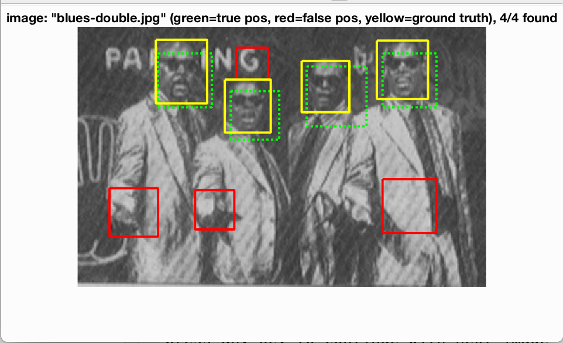 | 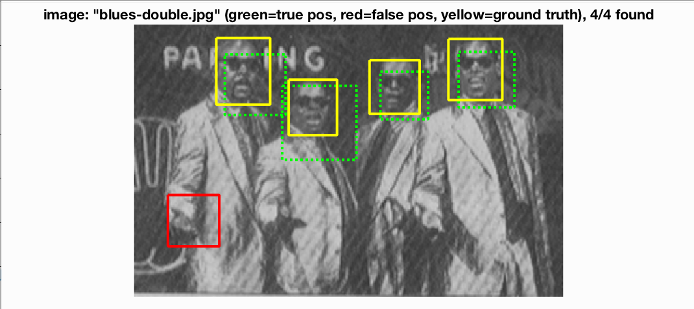 |
| 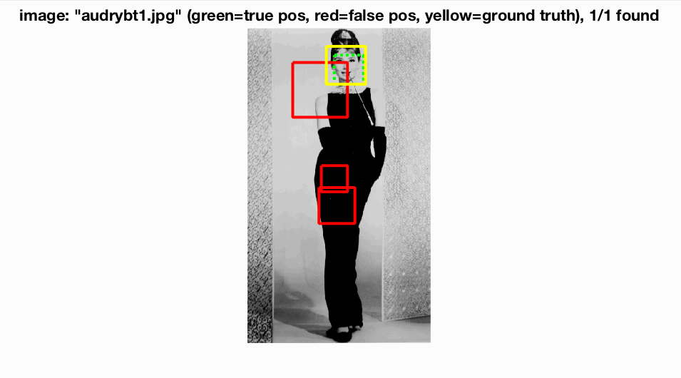 | 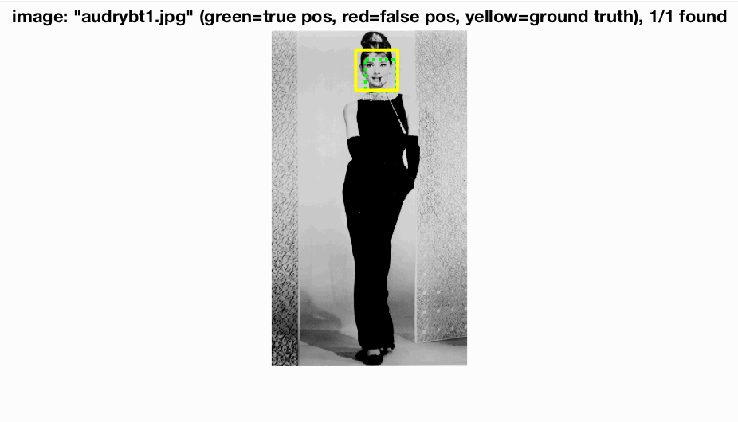 |
| 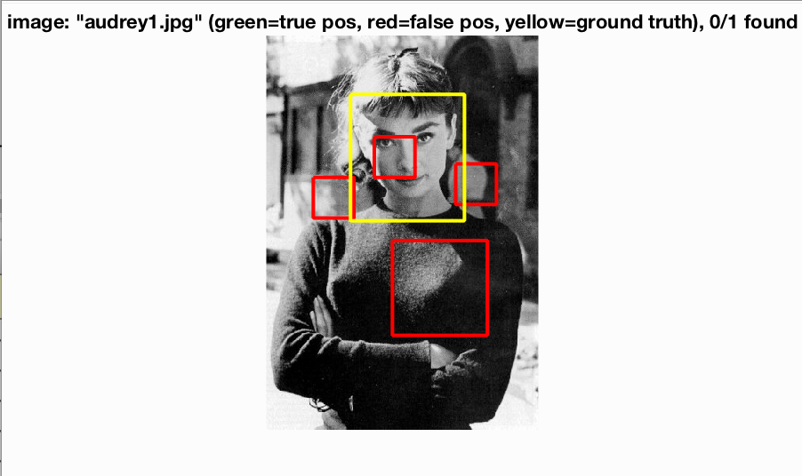 | 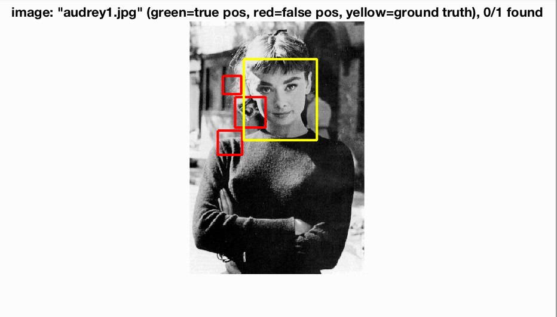 |
|
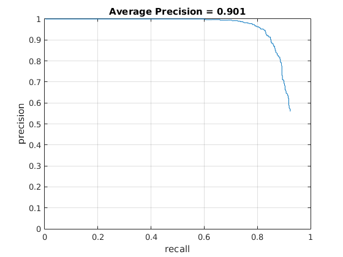
|
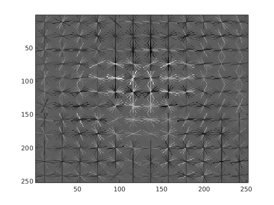
|
Final Results
Previously, only 30% of face image and 10000 negative samples are used for seek of speeding up debug process. Finally, we use all images for getting positive feature and increase the negative feature sameple to 30000. The resulted precision increase a lot to 92.3% which should be our best so far but it takes almost an hour to complete the computation on our computer.|
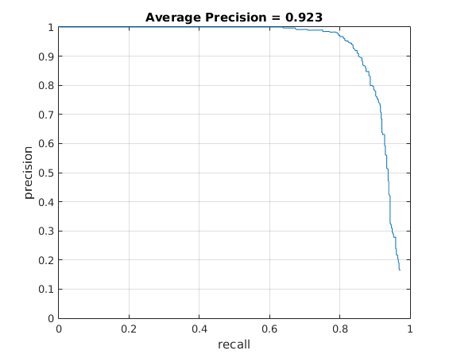
|
|
| 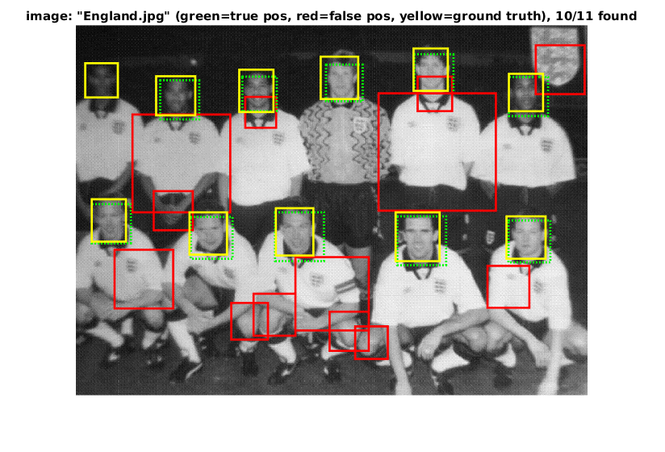 | 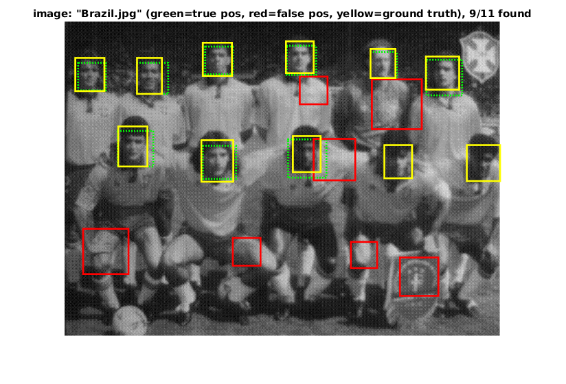 |
| 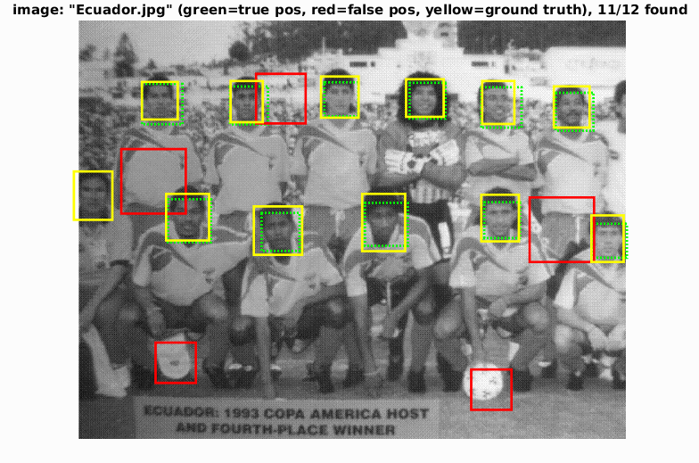 | 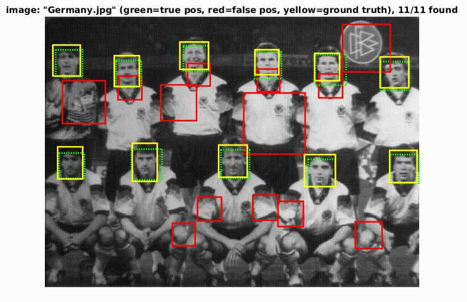 |

|
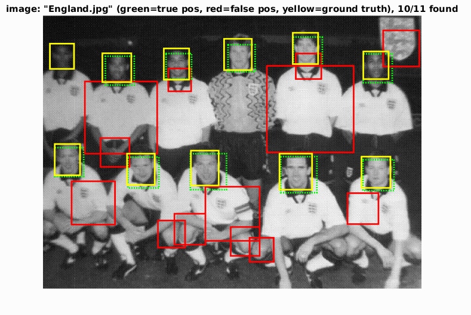 |